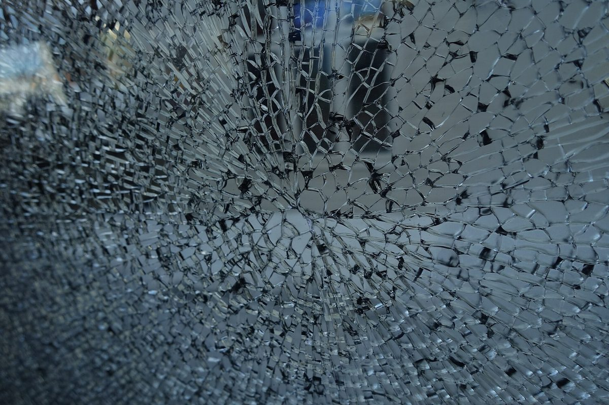
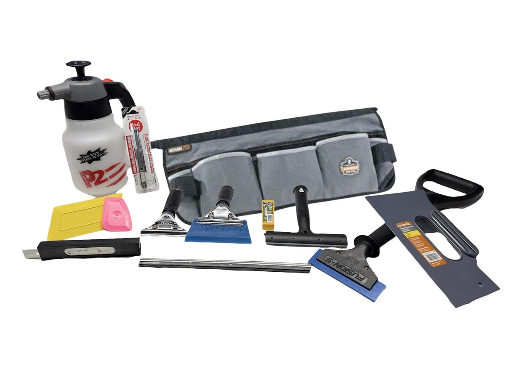

← Volver a Producción e InstalaciónLee esto primero: Estos videos enseñan solo la técnica. No dan ningún certificado ni estatus de distribuidor. Sign Depot ya es Distribuidor Autorizado de Películas para Ventanas 3M. Si un video y la especificación escrita de 3M no coinciden, gana la especificación escrita.
Mira en este orden
-
RC Window Films — instalación completa, de principio a fin (video principal)
El recorrido principal: película de seguridad en una puerta corrediza de vidrio, paso a paso — limpiar y raspar el vidrio, medir y cortar con una pulgada extra por lado, aplicar en húmedo, pasar la espátula del centro hacia afuera y recortar los bordes. Termina recalcando la fijación con silicona estructural Dow Corning 995 entre la película y el marco (se muestra en su Parte 2). No se menciona la marca de la película, así que míralo por la técnica; la especificación 3M de esta página sigue mandando en producto y tamaño de cordón.
youtube.com/watch?v=AR9X7BqV7HM
-
RC Window Films Parte 2 — la fijación con Dow Corning 995
El paso de fijación que completa el video principal: inspeccionar y limpiar la película y el marco, aplicar un cordón continuo de silicona estructural Dow Corning 995 en el espacio entre la película y el marco en un solo movimiento (la cinta de pintor mantiene la línea limpia), retirar la cinta, alisar el cordón con una tarjeta dura y dejar curar por completo — no tocarlo mientras esté húmedo. Él usa un cordón de aproximadamente 1/4 de pulgada en esta puerta residencial; nuestra especificación de abajo (mínimo 3/8 de pulgada de agarre por lado, 1/2 pulgada para trabajo antibalas de explosión / blast) es el estándar más estricto y manda en los trabajos de Sign Depot.
youtube.com/watch?v=TMnmMs9oSwY
Dos visitas, no una. La película se instala mojada, así que el cordón de 995 no puede ir el mismo día. Visita 1: la película (pasos 1 al 5). Deja secar los bordes al menos 14 días. Visita 2: el anclaje (pasos 6 al 10). ¿Todavía se ve humedad en los bordes? Espera otra semana y revisa de nuevo.
El trabajo, paso a paso (de los dos videos)
Listo. Ese es todo el trabajo: película puesta, fijación puesta, curando.
El kit del instalador

| Polyspray 2 Bottle |
| 6" Triumph MK2 Scraper |
| 6" Triumph Stainless Steel Scraper Blades (25 pack) |
| Unger Pro Handle |
| 12" Unger Channel w/ Squeegee |
| NT Pro A-1P Red Dot Knife w/ Blade |
| Olfa AB-50S Stainless Steel Snap-Off Blades (50 pack) |
| Gray 5-Way Trim Guide |
| Ergodyne Arsenal Tool Belt |
| Lil' Chizler |
| Yellow Diamond Tip Hard Card |
| Thor's Hammer (espátula pesada de extracción) |
El taller ya tiene el equipo del lado de la fijación (pistolas de calafateo, herramientas de calafateo, cinta, lentes de seguridad), así que no forma parte de este kit. Los cartuchos de Dow Corning 995 y la película son suministros por trabajo y se almacenan por separado.
Consejos y Trucos
- Todo mojado, siempre. Si se agarra, más solución. Nunca fuerces la película en seco.
- El polvo es el enemigo. Limpia el marco y el área alrededor, no solo el vidrio.
- Empieza por la pequeña. El cristal más chico primero. El ritmo llega en la segunda ventana.